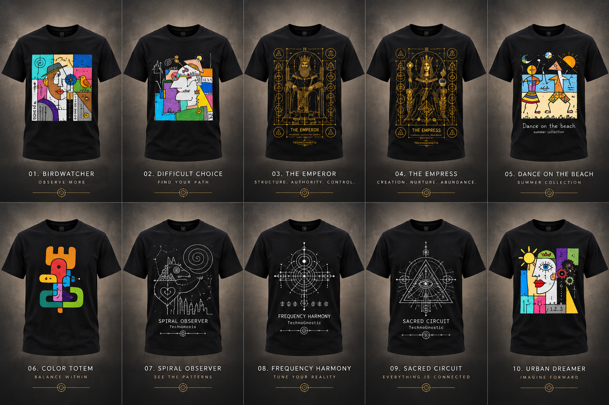
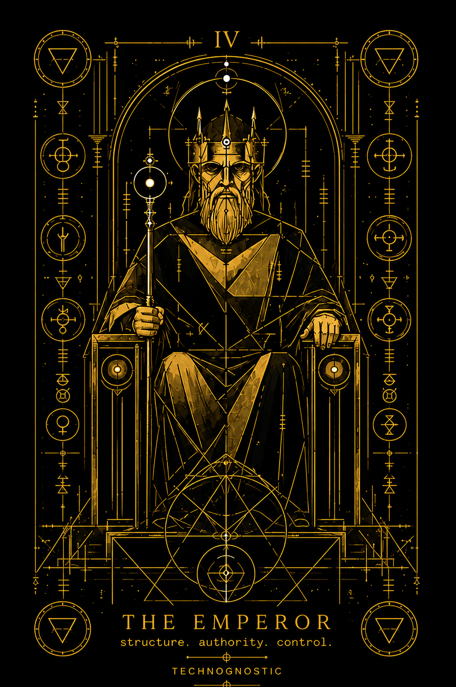
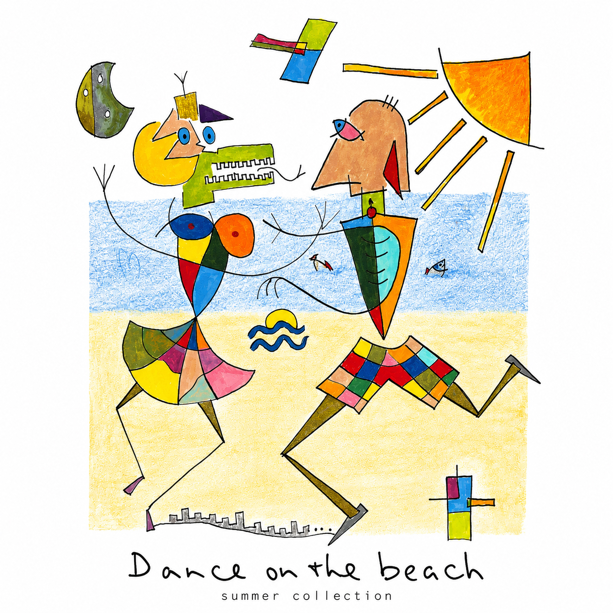
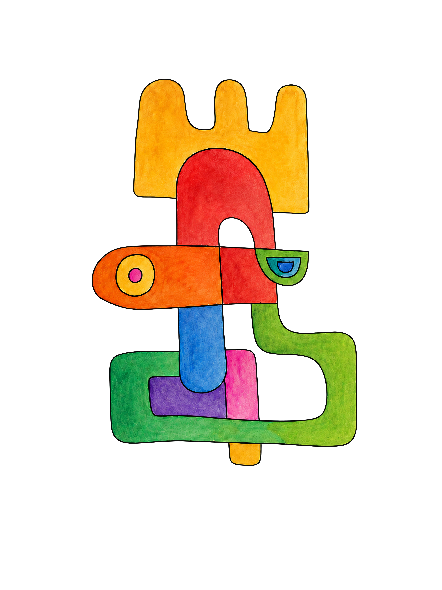
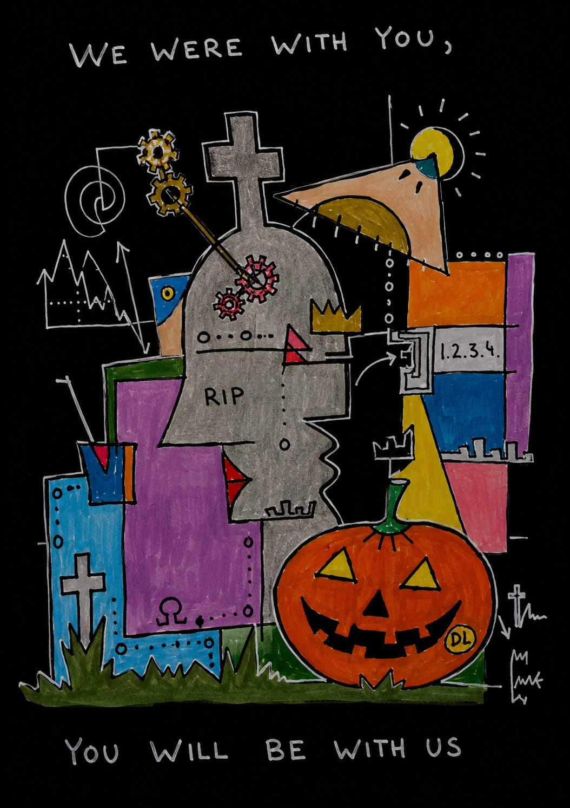

Signal 002
Spiral Observer
A mechanical witness follows an encoded spiral through orbital lines, quiet distance and deep indigo space.
View on Etsy
Original artwork / Mechanical imagination
Technognostic brings a hand-drawn visual language into contact with symbolic imagery, technology and cosmic imagination. Each work begins as an image with its own internal logic, then finds a second life on cloth.
Featured signals
Signal 002
A mechanical witness follows an encoded spiral through orbital lines, quiet distance and deep indigo space.
View on Etsy

Signal 001
An observatory signal rendered in hand-drawn colour—watched over by brass, dark steel and distant instruments.
View on Amazon
Signal 003
Fine circuitry becomes a symbolic architecture: balanced, precise and held within deliberate silence.
View on AmazonObject in rotation
A mechanical study of a garment in motion. Follow the full rotation from the front mark to the large artwork across the back.
Scroll to rotate
Representative still shown because reduced motion is enabled.
Original work
Original artwork. Hover to see it worn.

Artist portfolio
Original drawings behind Technognostic — and beyond.












External stores
Purchases are completed through external marketplace websites. Product links below are temporary placeholders.